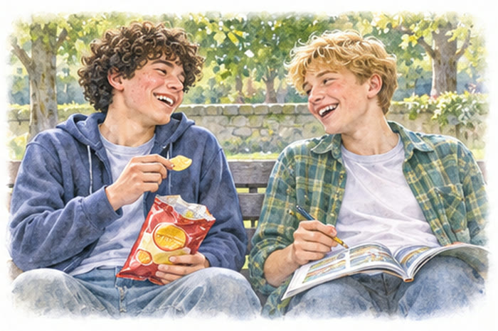

Listen to the text
Speed:

Last week I found a test in a magazine: "Are you a good friend?" My friend Ustym and I did it together. It was funnier than we expected. Question one. Your friend has got a terrible new haircut. What do you say? I chose: "It will grow." Ustym chose: "It looks great!" Then he looked at my hair and added, "By the way, it will grow." Question two. Your friend tells you a secret. How long can you keep it? I can keep a secret forever. Ustym says that he can keep it for a week, and then he forgets what the secret was. That is also a method. Question three. Your friend is sad and doesn't want to talk. What do you do? I would ask a hundred questions. Ustym would just sit next to me and share his crisps. I think that his answer is better. Question four. Your friend wins a competition that you wanted to win. How do you feel? We both said, "Happy for him and a bit sad for myself." The magazine says that this is the honest answer. Question five. You had an argument. Who says sorry first? We looked at each other and laughed. Last time we both wrote "sorry" at exactly the same minute. The results: I got eighteen points out of twenty. Ustym got seventeen. The magazine said, "You are a reliable friend. Keep working on it." "Seventeen is not fair," said Ustym. "I shared my crisps." "Only half of them," I said. We have been friends for nine years. No test can count that.
Tap any sentence to hear it again.
Сподобалось? На сайті ще більше матеріалів для вчителів!
Reader, презентації, ігри, діагностичні та контрольні роботи до підручників 1-11 класів.
Перейти на сайт materials.allaenglish.com